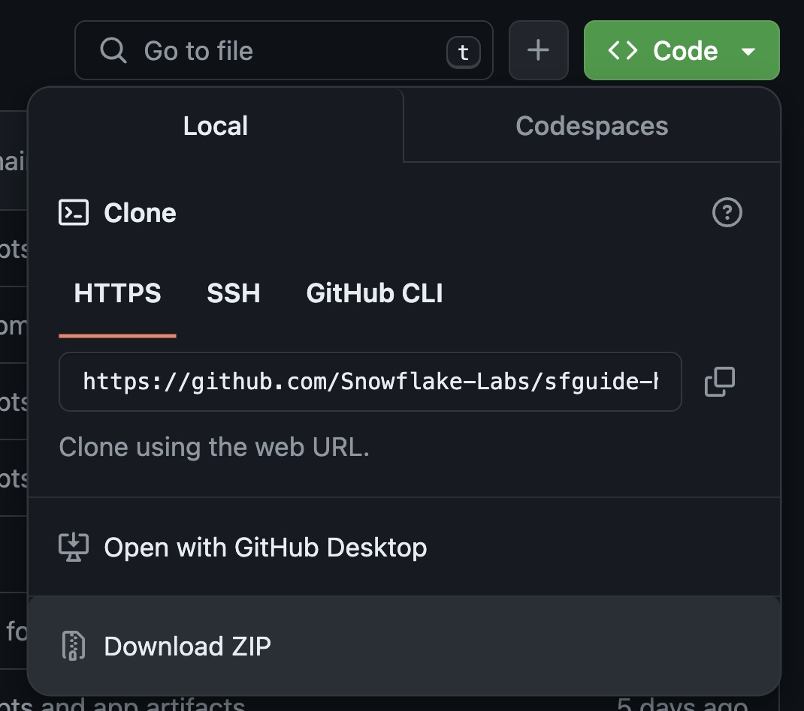
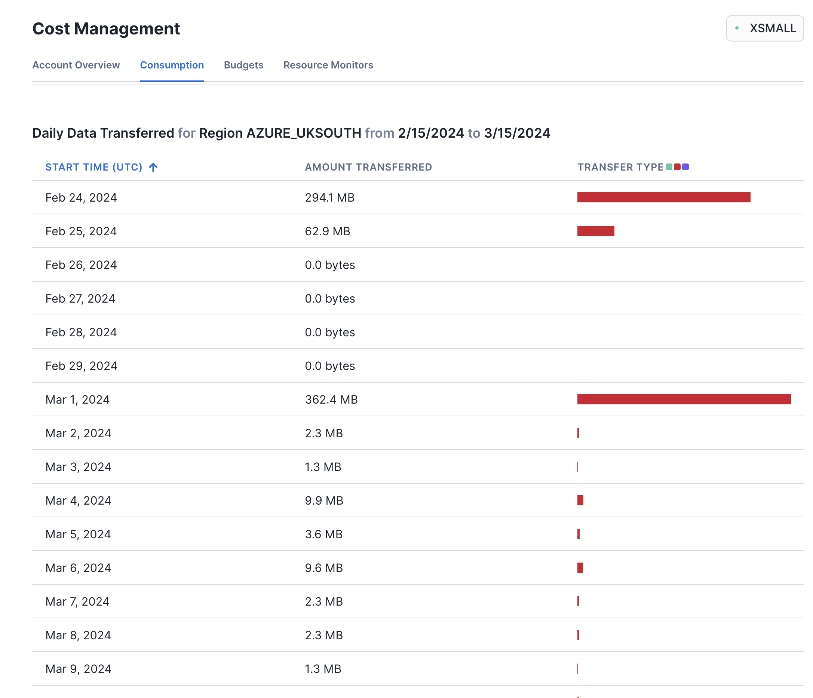
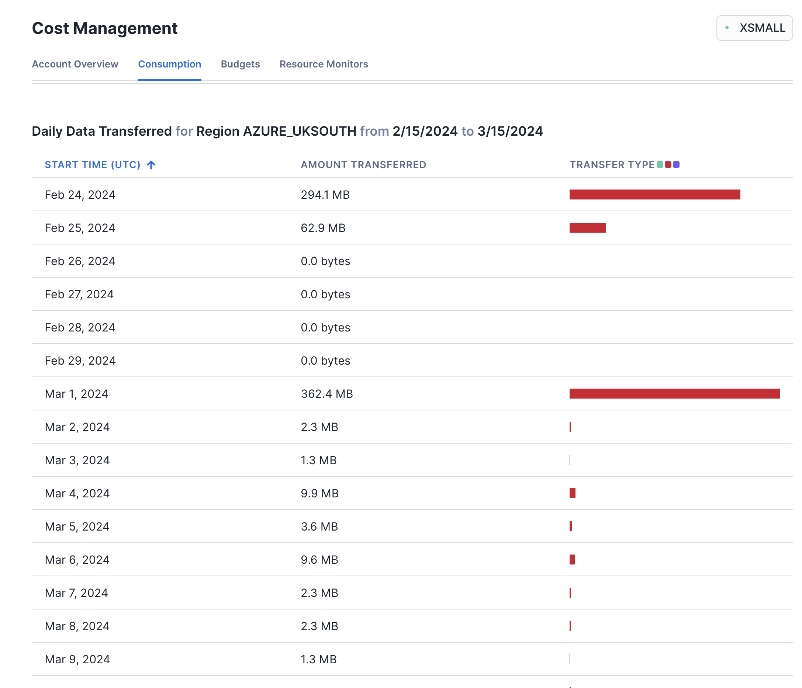
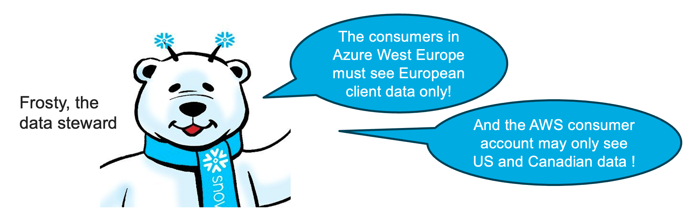

Sharing information between departments, business units and subsidiaries of a company is critical for success, particularly when there are organizational silos in place. A modern data platform must provide decentralized ownership, universal discovery, access control, federated governance, and observability.
Snowflake Horizon is a unified suite of governance and discovery capabilities organized into five pillars.

This Quickstart is focused on the Horizon Access pillar.
The objective of the Access pillar is to make it simple to share, discover, understand/build trust and access listings across any boundary, internal or external to the organization, and to make loose objects discoverable across account boundaries within an organization, supported by the tools necessary to ensure policy compliance, security, and data quality.
In this lab you will experience the latest Snowflake Horizon Access pillar features for sharing data and native apps intra-company: organizational listings, unified search & discovery, data quality monitoring, role-based governance policies and programmatic management of data products. We will cover structured and unstructured data that is stored on-platform or on external storage.
What You'll Learn
- How to blend TastyBytes Point-of-Sale and Marketplace Weather data to build analytics data products, then publish Listings targeted at accounts in your company
- How to configure data privacy polices that are preserved in the consumer accounts that install the listings. Tag-based column masking, row-access, aggregation and projection policies will be created with database roles.
- How to setup Data Metrics Functions to monitor data quality of the shared data products
- How to share Iceberg Tables within a cloud region
- How to share a native application with Streamlit visualization
- How to share unstructured text files cross-cloud and process with Cortex LLM functions
What You'll Need
- Basic knowledge of SQL, Database Concepts, Snowflake Listings
- Familiarity with Snowsight Worksheets
What You'll Build
- Analytics data products for TastyBytes, that models a global food truck network with localized menu options in 15 countries, 30 major cities and 15 core brands
- Listings comprised of metadata, data and application code, targeted at accounts in the same organization but in different cloud regions
- Governance policies based on shared role-based-access-controls that are enforced at the target account consuming the listing
- Install listings containing Iceberg Tables, then blend with local datasets to derive insights
Prerequisites
Create 3 Snowflake Trial Accounts in the same Snowflake Organization
Signup for an AWS trial account here
- Choose AWS as cloud provider, Business Critical edition, AWS_US_WEST_2 (Oregon) region
- Activate trial account with admin user
horizonadmin- admin user has system roles: ACCOUNTADMIN, ORGADMIN, SYSADMIN
- Login and create a SQL Worksheet named Account Setup
Note: alternatively you can use an existing account instead of a trial account, provided that account has the ORGADMIN system role enabled.
- Create user
horizonadmin, grant it ACCOUNTADMIN and ORGADMIN roles.
Execute the following SQL commands in the Account Setup worksheet to bootstrap:
USE ROLE accountadmin;
SET my_user_var = CURRENT_USER();
ALTER USER identifier($my_user_var) SET DEFAULT_ROLE = accountadmin;
CREATE OR REPLACE WAREHOUSE compute_wh WAREHOUSE_SIZE=small INITIALLY_SUSPENDED=TRUE;
GRANT ALL ON WAREHOUSE compute_wh TO ROLE public;
CREATE DATABASE IF NOT EXISTS snowflake_sample_data FROM SHARE sfc_samples.sample_data;
GRANT IMPORTED PRIVILEGES ON DATABASE snowflake_sample_data TO public;
-- Create an AWS Consumer account
USE ROLE orgadmin;
CREATE ACCOUNT horizon_lab_aws_consumer
admin_name = horizonadmin
admin_password = 'FILL_IN_PASSWORD'
email = 'FILL_IN_EMAIL'
must_change_password = false
edition = business_critical
region = AWS_US_WEST_2;
-- Create an Azure Consumer account
CREATE ACCOUNT horizon_lab_azure_consumer
admin_name = horizonadmin
admin_password = 'FILL_IN_PASSWORD'
email = 'FILL_IN_EMAIL'
must_change_password = false
edition = business_critical
region = AZURE_WESTEUROPE;
-- Verify that all three accounts are now created. Also, get the URLs
-- from the column account_url to log in to your consumer accounts later
SHOW ORGANIZATION ACCOUNTS;
-- Enable the ACCOUNTADMIN role on this account to enable global auto-fulfillment
USE ROLE orgadmin;
SELECT current_account_name();
SELECT SYSTEM$ENABLE_GLOBAL_DATA_SHARING_FOR_ACCOUNT('!FILL IN CURRENT_ACCOUNT_NAME()!');
-- PLEASE NOTE DOWN: "orgname-accountname" is the account format needed to add a connection to the Snowflake CLI
SELECT current_organization_name() || '-' || current_account_name();
Login to the HORIZON_LAB_AWS_CONSUMER and HORIZON_LAB_AZURE_CONSUMER accounts as horizonadmin and run the following in a worksheet in each of the two accounts:
USE ROLE accountadmin;
SET my_user_var = CURRENT_USER();
ALTER USER identifier($my_user_var) SET DEFAULT_ROLE = accountadmin;
CREATE OR REPLACE WAREHOUSE compute_wh WAREHOUSE_SIZE=medium INITIALLY_SUSPENDED=TRUE;
GRANT ALL ON WAREHOUSE compute_wh TO ROLE public;
CREATE DATABASE IF NOT EXISTS snowflake_sample_data FROM SHARE sfc_samples.sample_data;
GRANT IMPORTED PRIVILEGES ON DATABASE snowflake_sample_data TO public;
USE ROLE useradmin;
CREATE OR REPLACE ROLE sales_emea_role
COMMENT = 'EMEA Sales role for Tasty Bytes';
CREATE OR REPLACE ROLE sales_americas_role
COMMENT = 'Americas Sales role for Tasty Bytes';
CREATE OR REPLACE ROLE sales_apj_role
COMMENT = 'APJ Sales role for Tasty Bytes';
CREATE OR REPLACE ROLE sales_manager_role
COMMENT = 'Sales Manager (all-access) role for Tasty Bytes';
-- grant all these roles to the login user
GRANT ROLE sales_emea_role TO USER identifier($my_user_var);
GRANT ROLE sales_americas_role TO USER identifier($my_user_var);
GRANT ROLE sales_apj_role TO USER identifier($my_user_var);
GRANT ROLE sales_manager_role TO USER identifier($my_user_var);
SHOW ROLES;
Install Snowflake CLI and configure Connections to Snowflake accounts
- Install Python (3.8 or higher):
python --version- Homebrew makes it simple to install python
% brew install python- (optional):
% sudo ln -s /usr/bin/python3 /usr/local/bin/python
- Homebrew makes it simple to install python
- Install pipx or pip (MacOS)
% brew install pipx% pipx ensurepath- exit and open a new Terminal so path takes effect
- Install Snowflake CLICreate CLI connections to the 3 accounts using snow connection add:
- use connection names:
horizon-aws-provider, horizon-aws-consumer, horizon-azure-consumer - Snowflake CLI expects the account format orgname-accountname
SELECT current_organization_name() || '-' || current_account_name();
- enter password when prompted, just hit return for the remaining prompts
snow connection add -n horizon-aws-provider -a [orgname]-[provider_accountname] -u horizonadmin -r accountadmin -w compute_wh
snow connection add -n horizon-aws-consumer -a [orgname]-horizon_lab_aws_consumer -u horizonadmin -r accountadmin -w compute_wh
snow connection add -n horizon-azure-consumer -a [orgname]-horizon_lab_azure_consumer -u horizonadmin -r accountadmin -w compute_wh
snow connection set-default "horizon-aws-provider"
snow connection test --connection horizon-aws-provider
snow connection test --connection horizon-aws-consumer
snow connection test --connection horizon-azure-consumer
# list all connections and check that default is horizon-aws-provider
snow connection list
# you can also manually edit the config.toml file to remove or modify connections
snow --info
Raw text data provided for this lab is an extract from the IMDB Large Movie Review Dataset
Use of this dataset requires that we cite this ACL 2011 paper by Andrew Maas, et al: @InProceedings{maas-EtAl:2011:ACL-HLT2011, author = {Maas, Andrew L. and Daly, Raymond E. and Pham, Peter T. and Huang, Dan and Ng, Andrew Y. and Potts, Christopher}, title = {Learning Word Vectors for Sentiment Analysis}, booktitle = {Proceedings of the 49th Annual Meeting of the Association for Computational Linguistics: Human Language Technologies}, month = {June}, year = {2011}, address = {Portland, Oregon, USA}, publisher = {Association for Computational Linguistics}, pages = {142–150}, url = {http://www.aclweb.org/anthology/P11-1015} }
Weather Source LLC: frostbyte Marketplace listing requires accepting terms of use by the Provider and Snowflake.
Clone our Horizon Quickstart Scripts repository to your local machine with git:
mkdir ~/snowflakelabs
cd ~/snowflakelabs
git clone git@github.com:Snowflake-Labs/sfguide-horizon-intra-organization-sharing.git horizon-intra-org-scripts
cd horizon-intra-org-scripts
If you prefer not to use git, Download ZIP from the Lab Scripts github site
Load the SQL scripts in the code/sql directory into Snowsight Worksheets - one script per worksheet

Execute Setup SQL Scripts
100_Setup_Data_Model: create the TastyBytes foundational data model. TastyBytes is a fictitious global food truck network that operates in 30 major cities located in 15 countries with localized menu options and brands. The singleFrostbytes_Tasty_Bytesis organized in the following schemas:
RAW_CUSTOMER: raw customer loyalty data with personally identifiable information (PII)RAW_POS: raw point-of-sale data denormalized by orders, menu, franchise and countryHARMONIZED: blended metrics for customers and ordersANALYTICS: analytic data that delivers insights for aggregate trends and drill down b Use the Run All pulldown command to run100_Setup_Data_Model:

200_Setup_Data_Products: build data assets to share in a Listing.
In step 1(a) of thescript 200_Setup_Data_Products you will acquire the Weather Source LLC listing from the Marketplace and install it as a shared database FROSTBYTE_WEATHERSOURCE.
-- Step 1(a) - Acquire "Weather Source LLC: frostbyte" Snowflake Marketplace Listing
/*---
1. Click -> Data Products (Cloud Icon in left sidebar)
2. Click -> Marketplace
3. Search -> frostbyte
4. Click -> Weather Source LLC: frostbyte
5. Click -> Get
6. Click -> Options
6. Database Name -> FROSTBYTE_WEATHERSOURCE (all capital letters)
7. "Which roles, in addition to ACCOUNTADMIN, can access this database?" -> PUBLIC
8. Click -> Get
---*/

Then proceed to execute all remaining steps in this script. This will create secure views, materialized views, functions and dynamic tables in the ANALYTICS schema, and an internal stage for sharing text data.
Check out all the new objects created in the ANALYTICS and HARMONIZED schemas in the Snowsight Object Explorer panel. You will later create a Listing to share all of these objects.

Upload Unstructured Data into an Internal Stage
We have extracted 100 text files from the IMDB Large Movie Review dataset into the repo, that was cloned to your local machine earlier.
Now we can copy those text files into the internal stage movie_stage that was created by the SQL setup scripts. Run the snow CLI commands at the root of your repo, where the git clone was done.
cd ~/git_repos/sfguide-horizon-intra-org
snow stage copy data/imdb_reviews @frostbyte_tasty_bytes.movie_reviews.movie_stage
# verify that there are now 100 files in the stage
snow stage list-files @frostbyte_tasty_bytes.movie_reviews.movie_stage
Setup is now complete!
In this section you will create, publish, consume, alter, and monitor a listing.
Build and Publish a Listing in the Provider Studio UI
- Navigate to the Provider Studio and click the +Listing button in the top right:

- Give your listing a meaningful title. Let's use TASTY_BYTES_ANALYTICS in this lab. Then select the option that "Only Specified Consumers" can discover the listing, and click "Next".

- Click "+ Select" and add the secure functions, the dynamic table, and all the secure views in the ANALYTICS and HARMONIZED schemas to this listing.

- Continue the listing specification:
- Add a description to document your listing.
- For example: "This listing shares the Tasty Bytes Analytics and Harmonized data objects, including views, functions, and a dynamic table that provide a wealth of useful information."
- Add your two secondary accounts for this lab (one on AWS and one on Azure) as consumer accounts for this listing. Specify each consumer account as
org-name.account-name, which you can obtain as follows:
select current_organization_name() ||'.'|| current_account_name();- Further down in the same dialog, enter your email address to receive notifications about this listing.
- Click "SAVE & ADD MORE INFORMATION" to add even more metdata to your listing.

- Add a description to document your listing.
- You are now looking at your draft listing. Scroll down and add all optional information items to your listing.
 This will add additional sections to your listing.Click the ADD button in each of these sections to configure the data dictionary and to add business needs, sample queries, and attributes:
This will add additional sections to your listing.Click the ADD button in each of these sections to configure the data dictionary and to add business needs, sample queries, and attributes:- Configuring the data dictionary allows you to select "featured" objects that consumers will see first in the dictionary.
- Select the views CUSTOMER_LOYALTY_METRICS_V and ORDERS_BY_POSTAL_CODE_V as well as the function FAHRENHEIT_TO_CELSIUS as featured objects.
- You can grab some sample queries from the script 1000_Consumer_Queries.sql
- Attributes allow you to specify service level objectives such as how often you intend to update the data product or other properties.

- In your draft listing, navigate to the section "Consumer Accounts". Click the three dots on the right to update the refresh frequency of the replica that Snowflake will automatiucally create to share the data product with your Azure account.
- For the purpose of this lab, set the replication frequency to 1 minute.

- Publish your listing.
- You can preview your draft listing at any time.
- When done, click the blue "Publish Listing" button in the top right corner.
Install the Listing in your Consumer Accounts
- Switch to Consumer Account: Horizon_Lab_Azure_Consumer
- In a different tab of your web browser login to your account "horizon_lab_azure_consumer" that you created in the Azure West Europe Region.
- Use the menu in the bottom left of the UI to switch to the ACCOUNTADMIN role.
- Navigate to "Data Products" and then "Private Sharing" in the left hand menu panel.
- You will now see the listing that has been shared with this account.
- Click the listing name (not the Get button) to open and examine the listing details. For example, explore the data dictionary for the views and functions.

- After reviewing the listing, click the GET button.
- You may be asked for your name & email address if this is the first time a listing is being consumed in this Snowflake account. Do provide this information, then go to your Email Inbox and validate the email that was sent.
- After you click the GET button Snowflake performs a one-time setup of the replication process (auto-fulfillment) to the local region.
- You may have to wait for several minutes for this one-time setup to complete. Click OK. We will check back later.

- Switch to Consumer Account: Horizon_Lab_AWS_Consumer
- In yet another tab of your web browser login to your account "horizon_lab_aws_consumer".
- Use the menu in the bottom left to switch to the ACCOUNTADMIN role.
- Navigate to "Data Products" and then "Private Sharing".
- Click the listing name (not the Get button) to open and examine the listing details.
- After reviewing the listing, click the GET button.
- Again, you may be asked to provide and validate your email address.
- After you click the GET button you can immediately mount the shared data product. There is no replication setup in this case since the provider account is in the same cloud region as this consumer account.
- Under "Options" leave the local database name as is (it should be TASTY_BYTES_ANALYTICS), and select SALES_MANAGER_ROLE as an additional role to have immediate access to the data product.
- Click GET to confirm
 You can now use a worksheet or the database explorer to examine the shared data as a consumer.
You can now use a worksheet or the database explorer to examine the shared data as a consumer. - Observe live data sharing in action
- Switch to the AWS Provider account where you published the listing
- Insert or update some of the source data. You can use the following statement which uses a very cool SQL feature to modify the columns produced by
SELECT *.- The syntax
SELECT * REPLACE (returns all columns but replaces the columnAS )
- The syntax
-- re-insert existing data for Berlin but give it today's date as the valid date INSERT INTO FROSTBYTE_TASTY_BYTES.WEATHER.HISTORY_DAY SELECT * REPLACE (current_date AS DATE_VALID_STD) FROM FROSTBYTE_TASTY_BYTES.WEATHER.HISTORY_DAY WHERE city_name = 'Berlin' ORDER BY date_valid_std DESC;- Switch back to your Horizon_Lab_AWS_Consumer account to see that the data changes are instantly visible. For example:
SELECT * FROM tasty_bytes_analytics.HARMONIZED.DAILY_WEATHER_V WHERE city_name = 'Berlin' ORDER BY date_valid_std DESC;
Use the Listing API to modify listing properties programmatically
- SHOW LISTINGS in the AWS Provider account where you published the listing.

- Copy the Snowflake object name of your listing and use it in the subsequent DESCRIBE LISTING command.
- Note: If that listing name contains special characters other than the underscore, then the name must be in double quotes and is case-sensitive.
- In the result of DESCRIBE LISTING, scroll to the right to the column MANIFEST_YAML and copy its column value. This YAML file is a complete representation of the listing and enables programmatic management of listings.

- Paste the copied YAML into an ALTER LISTING statement using the listing name obtained in step 2 above (Show Listing).
- Make some changes in the YAML that you can easily verify in the UI and on the consumer side. For example, update the title and the first line of the description.
- Execute the ALTER LISTING statement.

- Verify the immediate effect of the ALTER LISTING statement
- In the provider account, navigate to the Provider Studio, select "Listings" from the horizontal menu at the top, and open your listing.

- Switch to your consumer account Horizon_Lab_AWS_Consumer.
- Navigate to "Data Products", then "Private Sharing", and open the listing page again. Refresh if needed to see the changes from the ALTER LISTING statement.
Monitor Auto Fulfillment status and cost
Time to revisit the second consumer account ("horizon_lab_azure_consumer") and the replication into that Azure region. By now, the one-time replication setup has been completed in the background and the data product is now ready to use.
- Switch to the account "horizon_lab_azure_consumer" as ACCOUNTADMIN, and navigate to "Private Sharing" to open the listing that has been shared.
- Click the GET button to mount the data product locally, as you did in the "horizon_lab_aws_consumer" account.
- Switch to the AWS Provider account and take the following steps to monitor replication status and cost.
- Navigate to the "Provider Studio", select "Listings" from the horizontal menu at the top, and open your listing.
- On the listings page, scoll down to "Consumer Account", click on the 3 dots, and select "Manage Regions & Replication"
- Select the "Azure West Europe Region" to see the timestamp of the latest refresh to that region.

- Go back to the Provider Studio, select "Analytics" from the horizontal menu at the top. This is where summarized and detailed statistics about the usage of the listings will be displayed eventually. There is some delay in populating these statistics, but the following screenshots give you an idea of what you will see.
 The same information as well as replication details can also be obtained from various views in the schema SNOWFLAKE.DATA_SHARING_USAGE and SNOWFLAKE.ORGANIZATION_USAGE:
The same information as well as replication details can also be obtained from various views in the schema SNOWFLAKE.DATA_SHARING_USAGE and SNOWFLAKE.ORGANIZATION_USAGE:use database SNOWFLAKE; select * from DATA_SHARING_USAGE.LISTING_ACCESS_HISTORY; select * from DATA_SHARING_USAGE.LISTING_AUTO_FULFILLMENT_DATABASE_STORAGE_DAILY; select * from DATA_SHARING_USAGE.LISTING_AUTO_FULFILLMENT_REFRESH_DAILY; select * from DATA_SHARING_USAGE.LISTING_EVENTS_DAILY; select * from DATA_SHARING_USAGE.LISTING_TELEMETRY_DAILY; select * from ORGANIZATION_USAGE.LISTING_AUTO_FULFILLMENT_USAGE_HISTORY; select * from ORGANIZATION_USAGE.REPLICATION_USAGE_HISTORY; - The replication cost can also be monitored in the UI. Navigate to the "Admin" menu in the left-hand panel, then to "Cost Management" and "Consumption". Switch the filter from "All Services" to "Cross-Cloud Auto-Fulfillment". Here is an example from a different test replicating a listing to the region Azure UK South:
 Additional filters enable you to select a time period, pick a specific target region, or toggle between compute cost, storage cost, and data transfer volume incurred by the listing auto-fulfillment.
Additional filters enable you to select a time period, pick a specific target region, or toggle between compute cost, storage cost, and data transfer volume incurred by the listing auto-fulfillment. 

Enable and Consume Change Tracking
The provider of a listing can choose to enable change tracking on the some or all of the tables or views that are shared in a listing. This enables the consumer to track the data changes. Let's do that with the view DAILY_WEATHER_V:
-- in the provider account:
ALTER VIEW FROSTBYTE_TASTY_BYTES.HARMONIZED.DAILY_WEATHER_V
SET CHANGE_TRACKING = TRUE;
The consumer can now define a Stream to capture the data changes in this view:
-- in the consumer account:
CREATE DATABASE tasty_bytes_local;
USE DATABASE tasty_bytes_local;
CREATE STREAM stream_daily_weather_changes ON VIEW tasty_bytes_analytics.HARMONIZED.DAILY_WEATHER_V;
To see the change tracking in action you can now insert, update, or delete some of the weather related data in the AWS Provider account. For example:
-- in the provider account:
INSERT INTO FROSTBYTE_TASTY_BYTES.WEATHER.HISTORY_DAY
SELECT * REPLACE (current_date AS DATE_VALID_STD)
FROM FROSTBYTE_TASTY_BYTES.WEATHER.HISTORY_DAY
WHERE city_name = 'San Mateo'
ORDER BY date_valid_std DESC;
Now switch to the consumer account and query the stream:
-- in the consumer account:
USE DATABASE tasty_bytes_local;
SELECT METADATA$ACTION, METADATA$ISUPDATE, *
FROM stream_daily_weather_changes;
This section of the lab introduces several capabilities for data providers to restrict the usage of their products by consumers.
Cross-Account Row-Level Access Policies
Frosty the data steward is concerned that our listing that we have shared includes the view ANALYTICS.CUSTOMER_LOYALTY_METRICS_V which contains sensitive information that must not be accessible to all data consumers. He requests the following restrictions:

Let's implement a row-level access policy to implement the required access control. Note the usage of the context function current_account_name() to detect which consumer account is accessing the shared view.
Fill in AWS Provider Account Name below
use database frostbyte_tasty_bytes;
use schema analytics;
CREATE OR REPLACE ROW ACCESS POLICY country_filter AS (country string)
RETURNS boolean ->
CASE
WHEN current_account_name() IN ('HORIZON_LAB_AWS_CONSUMER')
AND country IN ('United States', 'Canada')
THEN true
WHEN current_account_name() IN ('HORIZON_LAB_AZURE_CONSUMER')
AND country IN ('France', 'Germany', 'Poland', 'Sweden', 'Spain')
THEN true
WHEN current_account_name() IN ('*** FILL IN AWS Provider Account Name ***')
THEN true
ELSE false
END;
Then apply the policy to the shared view:
ALTER VIEW CUSTOMER_LOYALTY_METRICS_V ADD ROW ACCESS POLICY country_filter ON (country);
Now switch to the consumer account HORIZON_LAB_AWS_CONSUMER to confirm that only US and Canadian client data is visible in the view ANALYTICS.CUSTOMER_LOYALTY_METRICS_V.
After the replication interval of 1 minute you will also see that the consumer account HORIZON_LAB_AZURE_CONSUMER can only see the Eurpean clients.
Cross-Account Column Masking
But, Frosty the data steward is not yet satisfied:

Ok, let's get to work.
To make things easy, let's first create a tag that you can use to indicate which columns contain PII data.
CREATE SCHEMA IF NOT EXISTS tags;
CREATE OR REPLACE TAG tags.tasty_pii
ALLOWED_VALUES 'NAME', 'PHONE_NUMBER', 'EMAIL', 'BIRTHDAY'
COMMENT = 'Tag for PII, allowed values are: NAME, PHONE_NUMBER, EMAIL, BIRTHDAY';
With the tag created, let's assign it to the relevant columns in the Customer Loyalty view:
ALTER VIEW ANALYTICS.CUSTOMER_LOYALTY_METRICS_V
MODIFY COLUMN
first_name SET TAG tags.tasty_pii = 'NAME',
last_name SET TAG tags.tasty_pii = 'NAME',
phone_number SET TAG tags.tasty_pii = 'PHONE_NUMBER',
e_mail SET TAG tags.tasty_pii = 'EMAIL';
Optionally, you can also use the UI to add or see the tags on these columns:

Now let's create a slightly more advanced policy to mask the PII columns depending on their tag value and the consmer account:
Fill in AWS Provider Account Name below
CREATE OR REPLACE MASKING POLICY pii_string_mask AS (value STRING) RETURNS STRING ->
CASE
-- two roles in the provider account have access to unmasked values
WHEN CURRENT_ACCOUNT_NAME() IN ('*** FILL IN AWS Provider Account Name ***')
AND CURRENT_ROLE() IN ('ACCOUNTADMIN','SYSADMIN')
THEN value
-- For consumers in the 2nd AWS account: if a column is tagged with
-- TASTY_PII=PHONE_NUMBER then mask everything except the first 3 digits
WHEN CURRENT_ACCOUNT_NAME() IN ('HORIZON_LAB_AWS_CONSUMER')
AND SYSTEM$GET_TAG_ON_CURRENT_COLUMN('TAGS.TASTY_PII') = 'PHONE_NUMBER'
THEN CONCAT(LEFT(value,3), '-***-****')
-- For consumers in the Azure account: if a column is tagged with
-- TASTY_PII=EMAIL then mask everything before the @ sign
WHEN CURRENT_ACCOUNT_NAME() IN ('HORIZON_LAB_AZURE_CONSUMER')
AND SYSTEM$GET_TAG_ON_CURRENT_COLUMN('TAGS.TASTY_PII') = 'EMAIL'
THEN CONCAT('**~MASKED~**','@', SPLIT_PART(value, '@', -1))
-- all other cases and columns, such as first and last name, should be fully masked
ELSE '**~MASKED~**'
END;
Next, apply the policy to the tag so that the policy takes effect on all tages columns:
ALTER TAG tags.tasty_pii SET MASKING POLICY pii_string_mask;
Now switch to the consumer account HORIZON_LAB_AWS_CONSUMER and look at the view CUSTOMER_LOYALTY_METRICS_V to confirm that phone numbers are partially masked while the other PII columns are fully masked.
After the replication interval of 1 minute you will see in the account HORIZON_LAB_AZURE_CONSUMER that emails are partially masked while phone numbers and names are fully masked.
Database Roles - Provider Side
Just when we thought we had all the necessary governance controls in place, Frosty has a new requirement for us.

So far we have been using the context function CURRENT_ACCOUNT_NAME() in our governance policies to control which consumer account can see which data. Now Frosty is telling us, that this needs to be more fine-grained down to indivudal roles on the consumer side.
We will be using roles and database roles for 3 different continents. Let's check that we have the correct roles in place.
On the AWS Provider account, use show database roles to confirm that you have 4 database roles in place. Else create them now.
show database roles in database FROSTBYTE_TASTY_BYTES;
USE DATABASE frostbyte_tasty_bytes;
CREATE OR REPLACE DATABASE ROLE tastybytes_emea_role;
CREATE OR REPLACE DATABASE ROLE tastybytes_americas_role;
CREATE OR REPLACE DATABASE ROLE tastybytes_apj_role;
CREATE OR REPLACE DATABASE ROLE tastybytes_manager_role;
We can use these roles to define more granular and role-based access control for the data consumers. First, we need to give these roles access to the providers's schema and objects that we want to govern, in this case ANALYTICS.CUSTOMER_LOYALTY_METRICS_V:
use database FROSTBYTE_TASTY_BYTES;
grant usage on schema ANALYTICS to database role tastybytes_emea_role;
grant usage on schema ANALYTICS to database role tastybytes_americas_role;
grant usage on schema ANALYTICS to database role tastybytes_apj_role;
grant usage on schema ANALYTICS to database role tastybytes_manager_role;
grant select on view ANALYTICS.CUSTOMER_LOYALTY_METRICS_V
to database role tastybytes_emea_role;
grant select on view ANALYTICS.CUSTOMER_LOYALTY_METRICS_V
to database role tastybytes_americas_role;
grant select on view ANALYTICS.CUSTOMER_LOYALTY_METRICS_V
to database role tastybytes_apj_role;
grant select on view ANALYTICS.CUSTOMER_LOYALTY_METRICS_V
to database role tastybytes_manager_role;
Next, use the context function IS_DATABASE_ROLE_IN_SESSION() to recreate our row-level access policy to define which role can see customer loyality data from which country.
Fill in Provider Account Name in the last WHEN clause of the policy below
use database frostbyte_tasty_bytes;
use schema analytics;
ALTER VIEW CUSTOMER_LOYALTY_METRICS_V DROP ROW ACCESS POLICY country_filter;
-- Fill in Provider Account Name below
CREATE OR REPLACE ROW ACCESS POLICY country_filter AS (country string)
RETURNS boolean ->
CASE
-- users with the AMERICAS role can see data from the US, Canada, and Brazil
WHEN IS_DATABASE_ROLE_IN_SESSION('TASTYBYTES_AMERICAS_ROLE')
AND country IN ('United States', 'Canada', 'Brazil')
THEN true
-- users with the EMEA role can see data from these EMEA countries
WHEN IS_DATABASE_ROLE_IN_SESSION('TASTYBYTES_EMEA_ROLE')
AND country IN ('France', 'Germany', 'Poland', 'Sweden',
'Spain' , 'South Africa', 'Egypt')
THEN true
-- users with the APJ role can see data from these APJ countries
WHEN IS_DATABASE_ROLE_IN_SESSION('TASTYBYTES_APJ_ROLE')
AND country IN ('Japan', 'Australia', 'India', 'South Korea')
THEN true
-- users with the manager role can see all data
WHEN IS_DATABASE_ROLE_IN_SESSION('TASTYBYTES_MANAGER_ROLE')
THEN true
-- the account admin in the provider account can see all data
WHEN current_account_name() IN ('*** FILL IN AWS Provider Account Name ***')
AND current_role() = 'ACCOUNTADMIN'
THEN true
ELSE false
END;
ALTER VIEW CUSTOMER_LOYALTY_METRICS_V
ADD ROW ACCESS POLICY country_filter ON (country);
For a larger number of roles and countries you can certainly use a mapping table from role to country so that the policy simply performs a lookup in the mapping table.
The final step in the provider account is to share the database roles to the consumer accounts along with the data product. This is achieved by granting the database roles to the share:
-- Use your share name in these commands.
-- See below for hints on how to find your share name.
GRANT DATABASE ROLE tastybytes_emea_role TO SHARE <share_name>;
GRANT DATABASE ROLE tastybytes_americas_role TO SHARE <share_name>;
GRANT DATABASE ROLE tastybytes_apj_role TO SHARE <share_name>;
GRANT DATABASE ROLE tastybytes_manager_role TO SHARE <share_name>;
Here are two options how to find the share name for your listing:
Option 1:
In the provider account, navigate to the Provider Studio, select "Listings" from the horizontal menu at the top, and open your listing. In the section "Data Product" you find the name of the Secure Share that bundles the shared data objects. 
Option 2:
Use the SHOW SHARES command:

Copy the share name to a text file or worksheet because you will need it again later.
Database Roles - Consumer Side
To complete the configuration of cross-account role-based access control you need to assign the shared database roles to local account roles in the consumer roles.
Switch to your consumer accounts.
In each of your consumer accounts you should already have the following 4 roles that you created during the account setup. Verify that these roles are in place. Else, create them now.
SHOW ROLES LIKE 'SALES%';
CREATE OR REPLACE ROLE sales_emea_role COMMENT = 'EMEA Sales role';
CREATE OR REPLACE ROLE sales_americas_role COMMENT = 'Americas Sales role ';
CREATE OR REPLACE ROLE sales_apj_role COMMENT = 'APJ Sales role ';
CREATE OR REPLACE ROLE sales_manager_role COMMENT = 'Manager (all-access) role';
In a real-world scenario you would now assign each of these roles to different users. For simplicity in this lab, grant all of these roles to yourself:
SET my_user_var = CURRENT_USER();
GRANT ROLE sales_emea_role TO USER identifier($my_user_var);
GRANT ROLE sales_americas_role TO USER identifier($my_user_var);
GRANT ROLE sales_apj_role TO USER identifier($my_user_var);
GRANT ROLE sales_manager_role TO USER identifier($my_user_var);
And finally, grant the shared database roles to the local account roles. This connects these local consumers roles to the row-access policy that you create on the provider side.
use database TASTY_BYTES_ANALYTICS;
grant database role tastybytes_emea_role to role sales_emea_role;
grant database role tastybytes_americas_role to role sales_americas_role;
grant database role tastybytes_apj_role to role sales_apj_role;
grant database role tastybytes_manager_role to role sales_manager_role;
The following picture illustrates the use of our database roles in this data sharing scenario.

Now switch to the different local roles (sales_emea_role, sales_apj_role, etc) in each of your consumer accounts to verify that each local role can only see those rows in the CUSTOMER_LOYALTY_METRICS_V view that are permitted by the row-level access policy in the provider account.
Aggregation and Projection Policies

Frosty the data steward has a new requirement for us. In the consumer accounts, only admins and managers may see the detailed per-customer loyalty data. Anyone else may see aggregated data only.
Create the following aggregation policy to implement this requirement:
Fill in AWS Provider Account Name below
CREATE OR REPLACE AGGREGATION POLICY tasty_aggregation_policy
AS () RETURNS AGGREGATION_CONSTRAINT ->
CASE
WHEN current_account_name() IN ('*** FILL IN AWS Provider Account Name ***')
AND current_role() = 'ACCOUNTADMIN'
THEN NO_AGGREGATION_CONSTRAINT()
WHEN IS_DATABASE_ROLE_IN_SESSION('TASTYBYTES_MANAGER_ROLE')
THEN NO_AGGREGATION_CONSTRAINT()
ELSE AGGREGATION_CONSTRAINT(MIN_GROUP_SIZE => 50) -- at least 50 rows in aggregate
END;
ALTER VIEW analytics.CUSTOMER_LOYALTY_METRICS_V
SET AGGREGATION POLICY tasty_aggregation_policy;
Now switch to your consumer account horizon_lab_aws_consumer to verify the effect of the aggregation policy:
use role sales_apj_role;
-- sales_apj_role gets blocked from accessing any individual records:
SELECT * FROM analytics.CUSTOMER_LOYALTY_METRICS_V;
-- sales_apj_role can execute aggregation queries:
SELECT city, count(*) as num_cust_per_city
FROM analytics.CUSTOMER_LOYALTY_METRICS_V
GROUP BY city;
-- sales_manager_role is permitted to access individual records:
use role sales_manager_role;
SELECT * FROM analytics.CUSTOMER_LOYALTY_METRICS_V LIMIT 100;
Switch back to your AWS Provider account and issue the following command to deactivate the aggregation policy.
ALTER TABLE analytics.CUSTOMER_LOYALTY_METRICS_V UNSET AGGREGATION POLICY;
Next, let's also create a projection policy that prevents the city column from appearing in a result set but allows its usage in predicates to the restrict a query result:
Fill in AWS Provider Account Name below
CREATE OR REPLACE PROJECTION POLICY tasty_projection_policy
AS () RETURNS PROJECTION_CONSTRAINT ->
CASE
WHEN current_account_name() IN ('*** FILL IN AWS Provider Account Name ***')
AND current_role() = 'ACCOUNTADMIN'
THEN PROJECTION_CONSTRAINT(ALLOW => true)
WHEN IS_DATABASE_ROLE_IN_SESSION('TASTYBYTES_MANAGER_ROLE')
THEN PROJECTION_CONSTRAINT(ALLOW => true)
ELSE PROJECTION_CONSTRAINT(ALLOW => false)
END;
ALTER VIEW analytics.CUSTOMER_LOYALTY_METRICS_V
MODIFY COLUMN city
SET PROJECTION POLICY tasty_projection_policy;
Switch to your consumer account horizon_lab_aws_consumer again to explore the effect of the projection policy on the results or the following queries:
use role sales_apj_role;
SELECT * FROM analytics.CUSTOMER_LOYALTY_METRICS_V;
SELECT * EXCLUDE city FROM analytics.CUSTOMER_LOYALTY_METRICS_V;
SELECT * EXCLUDE city
FROM analytics.CUSTOMER_LOYALTY_METRICS_V
WHERE city IN ('Delhi','Tokyo','Seoul','Melbourne','Sydney','Mumbai');
SELECT city, count(*) as num_cust_per_city
FROM analytics.CUSTOMER_LOYALTY_METRICS_V
GROUP BY city;
Note that a projection policy by itself does not prevent users from detecting information about individuals. For example, the following query is permitted (and returns customer details if you remove the masking policy pii_string_mask):
SELECT * EXCLUDE city
FROM analytics.CUSTOMER_LOYALTY_METRICS_V
WHERE city = 'Melbourne' AND last_name = 'Arellano';
In this section the data provider will capture data quality metrics and share them with the data consumers. In particular, we want to monitor the data quality in the view ANALYTICS.ORDERS_BY_POSTAL_CODE_V.
Assign Built-in and Custom Data Quality Metrics to Shared Data
On AWS Provider account, execute the following commands to create a database where we will define any custom quality functions.
use role accountadmin;
create or replace database tasty_bytes_quality;
use database tasty_bytes_quality;
create schema dq_functions;
Next, let's define how often the quality of ORDERS_BY_POSTAL_CODE_V should be checked. For a table, the quality checks can be triggered by data changes or executed on a schedule. For views, the quality metrics can (currently) be evaluated on a schedule.
Let's set the schedule to the shortest possible interval, which is 5 minutes:
ALTER VIEW FROSTBYTE_TASTY_BYTES.ANALYTICS.ORDERS_BY_POSTAL_CODE_V
SET DATA_METRIC_SCHEDULE = '5 MINUTE';
Now, let's use two of Snowflake's built-in data quality functions to count the number of NULL valuse in the column POSTAL_CODE as well as the number of distinct cities reported in this view:
ALTER VIEW FROSTBYTE_TASTY_BYTES.ANALYTICS.ORDERS_BY_POSTAL_CODE_V
ADD DATA METRIC FUNCTION SNOWFLAKE.CORE.NULL_COUNT ON (POSTAL_CODE);
ALTER VIEW FROSTBYTE_TASTY_BYTES.ANALYTICS.ORDERS_BY_POSTAL_CODE_V
ADD DATA METRIC FUNCTION SNOWFLAKE.CORE.UNIQUE_COUNT ON (CITY);
Additionally, let's create a custom data quality function that counts the number of outliers, i.e. postal areas with an exceptionally high or low number of orders:
CREATE OR REPLACE DATA METRIC FUNCTION tasty_bytes_quality.dq_functions.postal_code_order_outliers (t TABLE (count_order INTEGER) )
RETURNS INTEGER
AS
$$
select count(*)
from t
where count_order > 300000
or count_order < 30
$$;
The owner of the object that is being monitored needs to have the privilege to execute the custom data metric function and use the database and schema where that function resides. Additional privileges are required to execute the built-in metric functions or view their results. To keep it simple, let's grant the following privileges to all users:
GRANT ALL ON FUNCTION tasty_bytes_quality.dq_functions.postal_code_order_outliers(TABLE(INTEGER)) to role public;
GRANT USAGE ON DATABASE tasty_bytes_quality to role public;
GRANT USAGE ON SCHEMA tasty_bytes_quality.dq_functions to role public;
GRANT EXECUTE DATA METRIC FUNCTION ON ACCOUNT to role public;
GRANT DATABASE ROLE SNOWFLAKE.DATA_METRIC_USER to role public;
GRANT DATABASE ROLE SNOWFLAKE.USAGE_VIEWER to role public;
Now we can apply our customer quality function to the view ORDERS_BY_POSTAL_CODE_V:
ALTER VIEW FROSTBYTE_TASTY_BYTES.ANALYTICS.ORDERS_BY_POSTAL_CODE_V
ADD DATA METRIC FUNCTION tasty_bytes_quality.dq_functions.postal_code_order_outliers
ON (count_order);
Use the following command to verify that all three quality metrics have been scheduled correctly. Any permission problems would be reflected in the column "schedule_status". Possible status values are documented here.
SELECT schedule_status, *
FROM TABLE(
INFORMATION_SCHEMA.DATA_METRIC_FUNCTION_REFERENCES(
REF_ENTITY_NAME => 'FROSTBYTE_TASTY_BYTES.ANALYTICS.ORDERS_BY_POSTAL_CODE_V',
REF_ENTITY_DOMAIN => 'VIEW' )
);

After 5 minutes you can start observing quality metrics in the default event table where all quality results are recorded:
Unfortunately, accessing
snowflake.local.data_quality_monitoring_results
is not yet available in Snowflake trial accounts! Please skip ahead to the next section Sharing Data Quality Metrics if you are using a trial account.
SELECT scheduled_time, measurement_time, metric_name, metric_schema,
value, table_name, table_schema, table_database
FROM snowflake.local.data_quality_monitoring_results /* not yet available in trial accounts! */
ORDER BY measurement_time DESC;

Additionally, you could define Alerts to watch the data quality metrics and take action automatically if acceptable thresholds are exceeded. For example, if the number of outliers reported by our custom quality function exceeds a certain value an alert could copy the offending rows into an exception table for review and send an email notification.
Sharing Data Quality Metrics
How to share quality metrics from the event table with data consumers? At the time of authoring this lab (May 2024) event tables cannot be shared in a Listing directly. Similarly, views, streams, and dynamic tables are not yet an option for sharing data quality events.
And since Snowflake trial accounts cannot access the event table (yet!), let's setup a task that regularly inserts data quality metrics into a table for sharing:
USE DATABASE FROSTBYTE_TASTY_BYTES;
CREATE SCHEMA FROSTBYTE_TASTY_BYTES.dq;
-- this table will hold and share 7 days worth of quality metrics:
CREATE OR REPLACE TABLE FROSTBYTE_TASTY_BYTES.dq.shared_quality_events
(measurement_time TIMESTAMP,
table_name VARCHAR,
table_schema VARCHAR,
table_database VARCHAR,
metric_name VARCHAR,
metric_schema VARCHAR,
value INTEGER );
-- this task will maintain the table above:
CREATE OR REPLACE TASK FROSTBYTE_TASTY_BYTES.dq.subset_quality_events
SCHEDULE = '3 MINUTE'
AS BEGIN
DELETE FROM dq.shared_quality_events
WHERE measurement_time < current_date - 7;
INSERT INTO dq.shared_quality_events
SELECT current_timestamp, 'ORDERS_BY_POSTAL_CODE_V',
'ANALYTICS', 'FROSTBYTE_TASTY_BYTES',
'NULL_COUNT', 'SNOWFLAKE.CORE',
SNOWFLAKE.CORE.NULL_COUNT(
SELECT POSTAL_CODE
FROM ANALYTICS.ORDERS_BY_POSTAL_CODE_V);
INSERT INTO FROSTBYTE_TASTY_BYTES.dq.shared_quality_events
SELECT current_timestamp, 'ORDERS_BY_POSTAL_CODE_V',
'ANALYTICS', 'FROSTBYTE_TASTY_BYTES',
'UNIQUE_COUNT', 'SNOWFLAKE.CORE',
SNOWFLAKE.CORE.UNIQUE_COUNT(
SELECT city
FROM ANALYTICS.ORDERS_BY_POSTAL_CODE_V);
INSERT INTO FROSTBYTE_TASTY_BYTES.dq.shared_quality_events
SELECT current_timestamp, 'ORDERS_BY_POSTAL_CODE_V',
'ANALYTICS', 'FROSTBYTE_TASTY_BYTES',
'postal_code_order_outliers', 'dq_functions',
tasty_bytes_quality.dq_functions.postal_code_order_outliers(
SELECT count_order
FROM ANALYTICS.ORDERS_BY_POSTAL_CODE_V);
END;
ALTER TASK subset_quality_events RESUME;
Now you can add the table "shared_quality_events" to the shared data product. Here are 2 options how you can so this.
Option 1: Programmatically
Grant the share the necessary access to the "shared_quality_events" table. You should already have the share name from the early section on Database Roles. Else, get the share name as in the first step of option 2 below.
GRANT USAGE ON SCHEMA FROSTBYTE_TASTY_BYTES.dq TO SHARE <share_name>;
GRANT SELECT ON FROSTBYTE_TASTY_BYTES.dq.shared_quality_events TO SHARE <share_name>;
Option 2: In the UI
Take the following 3 steps in the UI:
- In the provider account, navigate to the Provider Studio, select "Listings" from the horizontal menu at the top, and open your listing. In the section "Data Product" click on the name of the Secure Share that bundles the shared data objects.
- You are now looking at a page detailing the underlying share. In the section "Data", click the "Edit" button:

- Now you can open the data explorer to find and select the table "dq.shared_quality_events". Click "Done" and "Save" to finalize the update of your data product.

- Switch to your consumer account "horizon_lab_aws_consumer" to verify that the data quality metrics are immediately visible as a new table in the data product. In the second consumer account "horizon_lab_azure_consumer" you will see the same after the 1 minute replication interval.
- Go back to your provider account and suspend the task, to save credits in your trial account.
ALTER TASK subset_quality_events SUSPEND;
ALTER VIEW FROSTBYTE_TASTY_BYTES.ANALYTICS.ORDERS_BY_POSTAL_CODE_V
UNSET DATA_METRIC_SCHEDULE;
The Snowflake Native Application Framework provides developers the ability to create data intensive applications that run within the Snowflake platform with versioning controls.
- Native Apps allow sharing of data and related business logic with other Snowflake accounts.
- Native Apps are shared with Consumer accounts using a Listing.
- A listing can be free or paid, published on Marketplace or to specific accounts
- Rich visualizations can be include in the application with Streamlit.
Native App Workflow

You will build a native app that visualizes Tasty Bytes food truck Sales over Time by City.
The app will allow filtering on Year and City, while displaying the underlying raw data and associated SQL query. Consumer account admins responsible for installing the application will supply a country lookup table that restricts what is shown by Country using a row-access policy.
Overview of Project Structure
Here is the directory structure of the code repository that was cloned or downloaded from GitHub earlier, relevant to app artifacts for the native app:
|-- app
| |-- src
| |-- libraries
| | |-- environment.yml
| | |-- frosty_bytes_sis.py
| | |-- procs.py
| | |-- udf.py
| |-- manifest.yml
| |-- setup_script.sql
| |-- readme.md
|-- scripts
| |-- setup_package_script.sql
|-- snowflake.yml
src - stores all source code including stored procedures, user-defined functions (UDFs), streamlit application and installation script setup_script.sql.
setup_script.sql - defines all Snowflake objects used within the application. Runs every time a user installs the application, such as when a Consumer account installs the listing.
Here is a snippet from setup_script.sql that shows how a row-access policy limits country sales based on consumer region and role.
-- Create Row-Access Policy to limit access by Consumer region using a local mapping table
CREATE OR REPLACE TABLE app_instance_schema.region_country_map(region STRING, country STRING);
INSERT INTO app_instance_schema.region_country_map
VALUES ('PUBLIC.AZURE_WESTEUROPE','Germany'),
('PUBLIC.AZURE_WESTEUROPE','Spain'),
(......);
CREATE OR REPLACE ROW ACCESS POLICY app_instance_schema.country_row_policy
AS (country STRING) RETURNS BOOLEAN ->
country = 'Canada'
OR current_role() IN ('ACCOUNTADMIN','SYSADMIN','SALES_MANAGER_ROLE')
OR EXISTS
(
SELECT 1
FROM app_instance_schema.region_country_map map
WHERE 1=1
AND map.region = current_region()
AND map.country = country
)
COMMENT = 'Policy to limit rows returned based on region';
ALTER VIEW app_instance_schema.orders_v
ADD ROW ACCESS POLICY app_instance_schema.country_row_policy ON (country);
manifest.yml - defines version metadata, location of artifacts (setup script, streamlit), configuration of logging/tracing.
setup_package_script.sql - shares provider data that is needed by the application, executed when the application package is deployed or upgraded.
snowflake.yml - Snowflake CLI configuration file that contains native app name, location of source code directory, location of package setup script setup_package_script.sql
frosty_bytes_sis.py - Streamlit visualization python script that accesses the shared data within the application package.
Refer to the Getting Started with Native Apps Quickstart for more details.
Create Application Package using Snowflake CLI
Now let's create the Snowflake Application Package from the project files in our repo!
Open a new terminal at the root of the repository cloned/downloaded from Github and execute the following commands:
# verify that 3 account connections exist, with AWS Provider Account as DEFAULT
snow connection list
+-------------------------------------------------------------------------------------------------------------------------------+
| connection_name | parameters | is_default |
|------------------------+-----------------------------------------------------------------------------------------+------------|
| horizon-aws-provider | {'account': '***orgname-accountname***', 'user': 'horizonadmin', 'password': | True |
| | '****', 'warehouse': 'compute_wh', 'role': 'accountadmin'} | |
| horizon-aws-consumer | {'account': '**orgname**-horizon_lab_aws_consumer', 'user': 'horizonadmin', | False |
| | 'password': '****', 'warehouse': 'compute_wh', 'role': 'accountadmin'} | |
| horizon-azure-consumer | {'account': '***orgname***-horizon_lab_azure_consumer', 'user': 'horizonadmin', | False |
| | 'password': '****', 'warehouse': 'compute_wh', 'role': 'accountadmin'} | |
+-------------------------------------------------------------------------------------------------------------------------------+
snow app version create --skip-git-check
snow sql -q 'ALTER APPLICATION PACKAGE horizon_quickstart_package SET DEFAULT RELEASE DIRECTIVE version=V1 patch=0'
+---------------------------------------------------------+
| status |
|---------------------------------------------------------|
| Default release directive set to version 'V1', patch 0. |
+---------------------------------------------------------+
The app version create command will upload source files to a stage and create the application package. Setting the default release version and patch is a required step before the application package can be published in a listing. Documentation for publishing native applications is here
You should now see the HORIZON_QUICKSTART_PACKAGE listed under the Databases panel in Snowsight.

Publish App Package as a Listing targeted at our AWS, Azure Consumer Accounts
Return to Snowsight and ensure your role is ACCOUNTADMIN (check and set if necessary at the bottom left corner)
Navigate to Provider Studio (under Data Products) and click on + Listing to author a native app listing.

Now select the HORIZON_QUICKSTART_PACKAGE and fill in a brief description using the rich text editor. You can use this text to get started, but feel free to get creative!
Tasty Bytes is a fictitious global food truck networkthat is on a mission to serve unique food options with high quality items in a safe, convenient and cost effective way.In order to drive forward on their mission, Tasty Bytes is beginning to leverage the Snowflake Data Cloud.
This application provides Total Sales (USD) by Year for selected cities in an interactive graphical visualization. The cities available are dependent upon the Consumer account region: only sales for regional cities are shown. Also displayed are the underlying raw sales data and associated SQL query.
Add 2 Consumer Accounts:
The addition of a consumer account in a different cloud (or region) will reveal the auto-fulfillment panel. Provide your email to receive notifications and Publish

Initially the auto-fulfillment frequency is set to 1 Day, you can change it to 15 minutes after the listing is published.

Install the Tasty Bytes Sales App on Azure Consumer (HORIZON_LAB_AZURE_CONSUMER)
We are now at the moment of truth!
Switch to the HORIZON_LAB_AZURE_CONSUMER account
With listing auto-fulfillment, replication will only be initiated from Provider AWS region to Consumer Azure region when there is a request. Navigate to Snowsight Data Products -> Private Sharing to acquire the Tasty Bytes Global Sales application:

While the application objects are being delivered cross-cloud, we can now switch to the local AWS region consumer and install immediately.
Switch to the HORIZON_LAB_AWS_CONSUMER account

Open the application and while it is spinning up, click on the Manage Access button at top-right and give PUBLIC access.

Now try adding a few cities in addition to Vancouver:

Tasty Bytes is sold in 15 countries and 30 cities worldwide. Consider these questions and see if you can come up with convincing answers:
- What is the query that generates the city list in the Streamlit graph? [Hint: see
frosty_bytes_sis.py] - How many cities can be selected? If not all, why not? [Hint: see
setup_script.sql] - Try different roles [
ACCOUNTADMIN,SALES_MANAGER_ROLE,PUBLIC] - does the city list change?
Now it is time to return to HORIZON_LAB_AZURE_CONSUMER and check if auto-fulfillment has completed...
Open the application and again while it is spinning up, click on the Manage Access button to give PUBLIC access.
Try adding a few cities in addition to Vancouver as we did with the AWS US West consumer account

- Why is the country list different in the Azure West-Europe region (except Vancouver!)?
- Again, does it make any difference with different roles?
Streamlit does not currently allow role-based policies because of security concerns, so only the region mapping in the policy will apply.
To observe how the row-access policy evaluation of current_role() works in an application instance, outside of Streamlit, step through this SQL snippet in a Worksheet on the HORIZON_LAB_AWS_CONSUMER and HORIZON_LAB_AZURE_CONSUMER accounts:
USE APPLICATION TASTY_BYTES_GLOBAL_SALES;
USE ROLE ACCOUNTADMIN;
select distinct primary_city from tasty_bytes_global_sales.app_instance_schema.orders_v;
USE ROLE SALES_AMERICAS_ROLE;
select distinct primary_city from tasty_bytes_global_sales.app_instance_schema.orders_v;
USE ROLE SALES_APJ_ROLE;
select distinct primary_city from tasty_bytes_global_sales.app_instance_schema.orders_v;
USE ROLE SALES_EMEA_ROLE;
select distinct primary_city from tasty_bytes_global_sales.app_instance_schema.orders_v;
USE ROLE SALES_MANAGER_ROLE;
select distinct primary_city from tasty_bytes_global_sales.app_instance_schema.orders_v;
Iceberg tables in Snowflake combine the performance and query semantics of regular Snowflake tables with external cloud storage managed by the customer. Snowflake supports Iceberg tables that use the Apache Parquet file format.
Creating and writing data into a Snowflake Iceberg table is beyond the scope of this lab; we will focus only on the Consumer side of Iceberg table sharing.
Using the method outlined in Getting Started with Iceberg Tables Quickstart, create Iceberg Tables and policies based on what we created in the previous lab section.
On the Provider AWS Account execute the steps listed in code/sql/reference/iceberg_provider.sql cloned from Horizon Quickstart Scripts repository earlier:
- Create External Volume in Snowflake, after configuring an external volume with your cloud service provider (AWS, Azure, GCP).
- Create a
FROSTBYTE_ICEBERGdatabase with schemas for ANALYTICS, RAW_POS, RAW_CUSTOMER, GOVERNANCE, TPCH. - Create Iceberg Tables
CUSTOMER_LOYALTY_ICEBERG,ORDER_HEADER_ICEBERG,CUSTOMER_TPCH_ICEBERG,NATION_TPCH_ICEBERG. - Create Secure View
CUSTOMER_LOYALTY_METRICS_Vthat joins multiple iceberg tables. - Create Database Roles
TASTYBYTES_MANAGER_ROLEandTASTYBYTES_ANALYST_ROLEto restrict access for consumers. - Create and apply row-access policy
CUSTOMER_COUNTRY_ROW_POLICYtoCUSTOMER_LOYALTY_ICEBERG.COUNTRYcolumn that filters based on database role using theis_database_role_in_session()context function. - Create a listing called
ICEBERG_LAB_ANALYTICS, attach iceberg tables and secure view. - In the Listing Description section: enter instructions on post-installation steps (see below)
- In the Sample Queries section: enter queries for the consumer to run
Now switch to the HORIZON_LAB_AWS_CONSUMER account.
Navigate to Private Sharing in Snowsight and install the ICEBERG_LAB_ANALYTICS listing that was shared by the AWS Provider. Run these post-installation steps in a worksheet.
USE ROLE accountadmin;
SHOW DATABASE ROLES IN DATABASE iceberg_lab_analytics;
GRANT DATABASE ROLE iceberg_lab_analytics.tastybytes_manager_role to ROLE sales_manager_role;
GRANT DATABASE ROLE iceberg_lab_analytics.tastybytes_analyst_role to ROLE public;
Create two users to test access controls on the incoming Iceberg Analytics listing.
USE ROLE ACCOUNTADMIN;
CREATE OR REPLACE USER horizonengineer
PASSWORD=''
DEFAULT_ROLE = PUBLIC
MUST_CHANGE_PASSWORD = FALSE
DEFAULT_WAREHOUSE = COMPUTE_WH;
CREATE OR REPLACE USER horizonmanager
PASSWORD=''
DEFAULT_ROLE = SALES_MANAGER_ROLE
MUST_CHANGE_PASSWORD = FALSE
DEFAULT_WAREHOUSE = COMPUTE_WH;
GRANT ROLE SALES_MANAGER_ROLE TO USER horizonmanager;
Now run these queries that were entered as Sample Queries in the Iceberg listing. Compare results as a horizonengineer and horizonmanager user that leverages the row-access policy to limit sales analytics.
// Customer Sales by City
/*
Total food truck sales in USD by city
*/
SELECT
clm.city,
ROUND(SUM(clm.total_sales), 0) AS total_sales_usd
FROM analytics.customer_loyalty_metrics_v clm
GROUP BY clm.city
ORDER BY total_sales_usd DESC;
// Total Orders by Gender
/*
What are the total order amounts in each city by gender?
*/
SELECT
cl.gender,
cl.city,
COUNT(oh.order_id) AS count_order,
ROUND(SUM(oh.order_amount),0) AS order_total,
current_time()
FROM raw_pos.order_header_iceberg oh
JOIN raw_customer.customer_loyalty_iceberg cl
ON oh.customer_id = cl.customer_id
GROUP BY ALL
ORDER BY order_total DESC;
// Visible Countries and Cities
/*
How many cities in what countries can I view analytics data for?
*/
SELECT DISTINCT COUNTRY, CITY FROM analytics.customer_loyalty_metrics_v ORDER BY COUNTRY;
;
// TPCH Benchmark - Returned Item Reporting Query (Q10)
/*
The Returned Item Reporting Query finds the top 10 customers, in terms of their effect on lost revenue for a given quarter, who have returned parts. The customers are listed in descending order of lost revenue.
*/
SELECT
c_custkey,
c_name,
TRUNCATE(SUM(l_extendedprice * (1 - l_discount))) AS lost_revenue,
c_acctbal,
n_name,
c_address,
c_phone,
c_comment
FROM
tpch.customer_tpch_iceberg,
SNOWFLAKE_SAMPLE_DATA.TPCH_SF100.ORDERS,
SNOWFLAKE_SAMPLE_DATA.TPCH_SF100.LINEITEM,
tpch.nation_tpch_iceberg
WHERE
c_custkey = o_custkey
AND l_orderkey = o_orderkey
AND o_orderdate >= to_date('1993-10-01')
AND o_orderdate < dateadd(month, 3, to_date('1993-10-01'))
AND l_returnflag = 'R'
AND c_nationkey = n_nationkey
GROUP BY
c_custkey,
c_name,
c_acctbal,
c_phone,
n_name,
c_address,
c_comment
ORDER BY
lost_revenue DESC
LIMIT 10
;
We have previously staged 100 movie reviews extracted from the IMDB Large Movie Review Dataset.
Directory Tables are built-in Snowflake objects that provide an updated, tabular file catalog for staged data that makes it easy to search and lookup files.
USE ROLE sysadmin;
USE WAREHOUSE tasty_de_wh;
USE SCHEMA frostbyte_tasty_bytes.movie_reviews;
ALTER STAGE movie_stage refresh;
SELECT * FROM DIRECTORY(@movie_stage);
Snowflake offers access to unstructured data through three types of URLs based on the access policy that is required:
- Scoped URL: encoded URL to give a user temporary access (currently 24 hours) to a file without giving access to the stage.
- File URL: requires user authentication with Snowflake and read privileges on the stage.
- Pre-signed URL: pre-authenticated URL that allows download directly from a browser.
We will use Scoped URL to share these text files within and across cloud regions. Unlike with data and app sharing, the unstructured data will not be physically replicated cross-cloud.
On the AWS Provider Account open a SQL Worksheet called Unstructured Data and execute these commands sequentially:
USE ROLE sysadmin;
USE WAREHOUSE tasty_de_wh;
USE SCHEMA frostbyte_tasty_bytes.movie_reviews;
-- Here are the 100 review text files: click on any scoped URL to download and view
SELECT relative_path
, build_scoped_file_url(@movie_stage, relative_path) as scoped_url
from directory(@movie_stage);
-- Snowpark Python UDF to extract review contents from each file URL
CREATE FUNCTION extract_review(file_path string)
RETURNS STRING
LANGUAGE PYTHON
RUNTIME_VERSION = '3.8'
PACKAGES = ('snowflake-snowpark-python')
HANDLER = 'parse_text_file'
AS
$$
def parse_text_file(file_path):
from snowflake.snowpark.files import SnowflakeFile
with SnowflakeFile.open(file_path, 'r') as f:
lines = [ line.strip() for line in f ]
return lines
$$
;
-- Share secure view that extracts review contents for the Consumer
CREATE OR REPLACE SECURE VIEW movie_reviews_v
AS
SELECT relative_path as review_file_name,
extract_review(build_scoped_file_url(@movie_stage, relative_path)) as review_content,
build_scoped_file_url(@movie_stage, relative_path) as scoped_url
FROM DIRECTORY(@movie_stage);
SELECT * FROM movie_reviews_v limit 10;
-- Use the SUMMARIZE and SENTIMENT in-built Cortex LLM functions to derive insights from these reviews
SELECT review_file_name,
SNOWFLAKE.CORTEX.SUMMARIZE(review_content) as Summary,
TO_DECIMAL(SNOWFLAKE.CORTEX.SENTIMENT(review_content),3,2) as Sentiment,
scoped_url
FROM movie_reviews_v
ORDER BY Sentiment DESC
LIMIT 10;
Now this secure view can be shared in a private listing targeted at horizon_lab_aws_consumer and horizon_lab_azure_consumer just as we did in earlier sections with data and apps.
Create a new listing called IMDB Movie Reviews in Provider Studio to publish the review files and content:
- share the
MOVIE_REVIEWS_Vview - add a description that includes a link to the highest grossing film of all time: Avatar and this link that documents the reference dataset IMDB Large Movie Review Dataset
- target the two Consumer accounts in AWS and Azure regions
- include the query that calls
SUMMARIZEandSENTIMENTCortex LLM functions in the Sample Queries section to make it easy for Consumers

Publishing Fails - do you understand why?
Hint: MOVIE_REVIEWS_V uses a Python UDF for review content extraction, which can only be shared in a Native App!
Return to the HORIZON_QUICKSTART_PACKAGE we created in the previous section and publish an update after adding MOVIE_REVIEWS_V. Here are the steps:
- Modify
scripts/setup_package_script.sql: share themovie_reviews_vview similar to howorders_vview was handled - Modify
app/src/setup_script.sql: create a proxy viewmovie_reviews_vsimilar toorders_vinapp_instance_schemagrant select onmovie_reviews_vto the application roleapp_instance_roleto make it visible - Create a new app version V2 by issuing:
snow app version create V2 --skip-git-check - Set the DEFAULT RELEASE DIRECTIVE to version V2 patch 0
snow sql -q 'ALTER APPLICATION PACKAGE horizon_quickstart_package SET DEFAULT RELEASE DIRECTIVE version=V2 patch=0'
And that is all it takes to upgrade a native app! (here is the App Upgrade Workflow doc)
On the AWS Consumer Account run this in a SQL Worksheet:
USE ROLE ACCOUNTADMIN;
-- install the app upgrade
ALTER APPLICATION TASTY_BYTES_GLOBAL_SALES UPGRADE;
USE APPLICATION TASTY_BYTES_GLOBAL_SALES;
SELECT * FROM app_instance_schema.movie_reviews_v limit 10;
SELECT review_file_name,
SNOWFLAKE.CORTEX.SUMMARIZE(review_content) as Summary,
TO_DECIMAL(SNOWFLAKE.CORTEX.SENTIMENT(review_content),3,2) as Sentiment,
scoped_url
FROM app_instance_schema.movie_reviews_v
ORDER BY Sentiment DESC
LIMIT 10;
-- Use this query to monitor usage of AI Services
-- Note: this will only populate on a daily basis
SELECT *
FROM snowflake.account_usage.metering_daily_history
WHERE SERVICE_TYPE='AI_SERVICES';
Try the same steps on the Azure Consumer Account:
How do you expect the refresh frequency for cross-cloud fulfillment to impact the application upgrade? (documentation on cross-region application upgrades here)
Congratulations, you made it through our Horizon Access journey! You have exercised a broad range of data sharing and governance capabilities. You have worked with different types of data products including structured data, unstructured data, and native applications. And you have deployed different types of governance policies to implement data access and data privacy restrictions.
What you Learned
- How to blend local Point-of-Sale data with Marketplace Weather data to build analytics data products.
- How to publish data products as Listings targeted at accounts in your company
- How to configure data access and privacy polices as a data provider to restrict data access by data consumers.
- How to use tag-based column masking, row-access, aggregation and projection policies with database roles in a collaboration scenario.
- How to manage Listings via the Listings API.
- How to setup data quality monitoring of shared data products
- How to share Iceberg Tables within a cloud region
- How to share a native application with Streamlit visualization
- How to share unstructured text files and process with Cortex LLM functions
Related Resources
- Lab Source Code on Github
- Snowflake Listings and Managing Listings via API
- Cross-cloud Auto-Fulfillment
- Data Governance Policies and Data Privacy Policies
- Data Quality Metrics
- Sharing Data Protected by a Policy
- Iceberg Tables in Snowflake
- Best Practices publishing a Snowflake Native App
- Sharing Unstructured Data